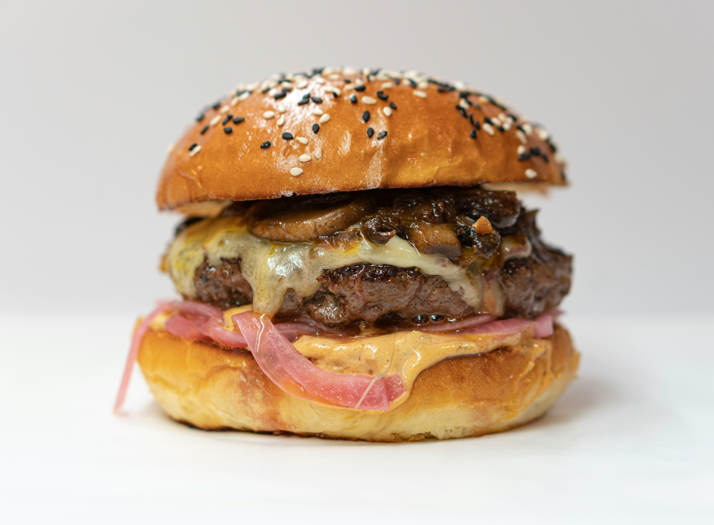

Cheeseburger

Photo by Amirali Mirhashemian on Unsplash
"How to make THE BEST cheeseburger! Perfect burger patties every. single. time. Includes an epic burger sauce too!" *
This simple cheeseburger recipe will satisfy your hunger at any hour! The recipe will yield 6 servings. It will take 15 minutes to prep and 15 minutes to cook.
Ingredients
- ½ cup mayonnaise
- ¼ cup ketchup
- 3 tablespoons dill pickle relish
- 1 tablespoon Dijon mustard
- 2 pounds ground beef, 80/20
- Kosher salt and freshly ground black pepper, to taste
- 1 tablespoon canola oil
- 6 slices American cheese
For Serving
- Brioche hamburger buns, homemade or store-bought
- Romaine or shredded lettuce
- Sliced tomato
- Sliced red onion
- Dill pickle chips
Steps
- BURGER SAUCE: In a small bowl, whisk together mayonnaise, ketchup, dill pickle relish and Dijon; set aside.
- In a large bowl, combine beef, 1 1/2 teaspoons salt and 1 1/2 teaspoons pepper. Using a wooden spoon or clean hands, stir until well combined. Gently form into 6 1-inch-thick patties, about the size of the hamburger buns.
- Heat canola oil in a large cast iron skillet over medium high heat. Add patties and cook until lightly charred or until desired doneness, about 3-5 minutes per side; top with cheese.
- Serve immediately in hamburger buns with BURGER SAUCE and desired toppings.
* This recipe and its descriptive content is fully sourced from Damn Delicious.